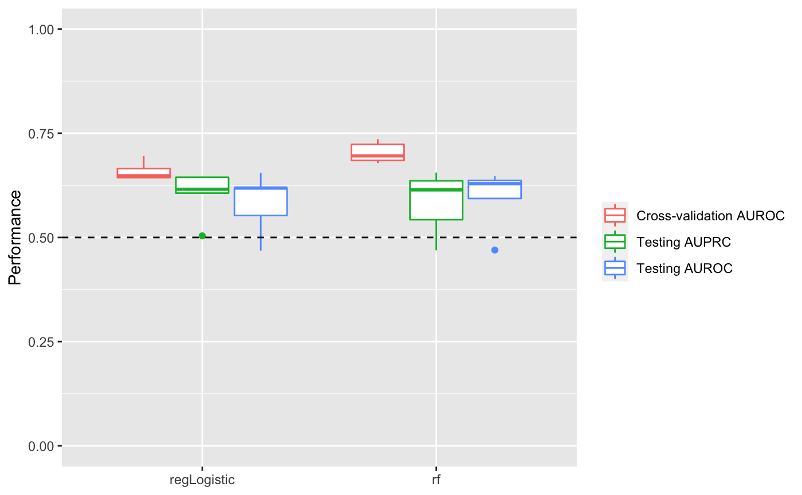
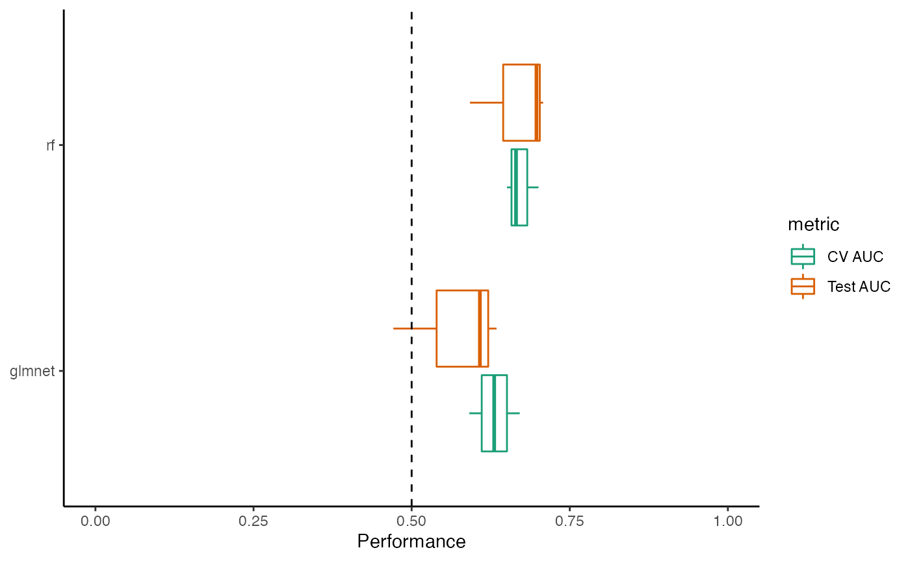

library(mikropml)
library(dplyr)
#>
#> Attaching package: 'dplyr'
#> The following objects are masked from 'package:stats':
#>
#> filter, lag
#> The following objects are masked from 'package:base':
#>
#> intersect, setdiff, setequal, unionBy default, preprocess_data() and run_ml() use only one process in series. If you’d like to parallelize various steps of the pipeline to make them run faster, install foreach, future, future.apply, and doFuture. Then, register a future plan prior to calling preprocess_data() and run_ml():
doFuture::registerDoFuture()
future::plan(future::multicore, workers = 2)Above, we used the multicore plan to split the work across 2 cores. See the future documentation for more about picking the best plan for your use case. Notably, multicore does not work inside RStudio or on Windows; you will need to use multisession instead in those cases.
After registering a future plan, you can call preprocess_data() and run_ml() as usual, and they will run certain tasks in parallel.
otu_data_preproc <- preprocess_data(otu_mini_bin, 'dx')$dat_transformed
#> Using 'dx' as the outcome column.
result1 <- run_ml(otu_data_preproc, 'glmnet')
#> Using 'dx' as the outcome column.
#> Loading required package: lattice
#> Loading required package: ggplot2run_ml() multiple times in parallel in RYou can use functions from the future.apply package to call run_ml() multiple times in parallel with different parameters. You will first need to run future::plan() as above if you haven’t already. Then, call run_ml() with multiple seeds using future_lapply():
# NOTE: use more seeds for real-world data
results_multi <- future.apply::future_lapply(seq(100, 102), function(seed) {
run_ml(otu_data_preproc, 'glmnet', seed = seed)
}, future.seed = TRUE)
#> Using 'dx' as the outcome column.
#> Using 'dx' as the outcome column.
#> Using 'dx' as the outcome column.Each call to run_ml() with a different seed uses a different random split of the data into training and testing sets. Since we are using seeds, we must set future.seed to TRUE (see the future.apply documentation and this blog post for details on parallel-safe random seeds). This example uses only a few seeds for speed and simplicity, but for real data we recommend using many more seeds to get a better estimate of model performance.
Extract the performance results and combine into one dataframe for all seeds:
perf_df <- future.apply::future_lapply(results_multi,
function(result) {
result[['performance']] %>%
select(cv_metric_AUC, AUC, method)
},
future.seed = TRUE) %>%
dplyr::bind_rows()
perf_df
#> # A tibble: 3 x 3
#> cv_metric_AUC AUC method
#> <dbl> <dbl> <chr>
#> 1 0.630 0.634 glmnet
#> 2 0.591 0.608 glmnet
#> 3 0.671 0.471 glmnetYou may also wish to compare performance for different ML methods. mapply() can iterate over multiple lists or vectors, and future_mapply() works the same way:
# NOTE: use more seeds for real-world data
param_grid <- expand.grid(seeds = seq(100, 102),
methods = c('glmnet', 'rf'))
results_mtx <- future.apply::future_mapply(
function(seed, method) {
run_ml(otu_data_preproc, method, seed = seed)
},
param_grid$seeds,
param_grid$methods %>% as.character(),
future.seed = TRUE
)
#> Using 'dx' as the outcome column.
#> Using 'dx' as the outcome column.
#> Using 'dx' as the outcome column.
#> Using 'dx' as the outcome column.
#> Using 'dx' as the outcome column.
#> Using 'dx' as the outcome column.Extract and combine the performance results for all seeds and methods:
perf_df2 <- lapply(results_mtx['performance',],
function(x) {x %>%
select(cv_metric_AUC, AUC, method)}) %>%
dplyr::bind_rows()
perf_df2
#> # A tibble: 6 x 3
#> cv_metric_AUC AUC method
#> <dbl> <dbl> <chr>
#> 1 0.630 0.634 glmnet
#> 2 0.591 0.608 glmnet
#> 3 0.671 0.471 glmnet
#> 4 0.665 0.708 rf
#> 5 0.651 0.697 rf
#> 6 0.701 0.592 rfVisualize the performance results (ggplot2 is required):
perf_boxplot <- plot_model_performance(perf_df2)
perf_boxplot
plot_model_performance() returns a ggplot2 object. You can add layers to customize the plot:
perf_boxplot +
theme_classic() +
scale_color_brewer(palette = "Dark2") +
coord_flip()
You can also create your own plots however you like using the performance results.
When parallelizing multiple calls to run_ml() in R as in the examples above, all of the results objects are held in memory. This isn’t a big deal for a small dataset run with only a few seeds. However, for large datasets run in parallel with, say, 100 seeds (recommended), you may run into problems trying to store all of those objects in memory at once. One solution is to write the results files of each run_ml() call, then concatenate them at the end. We show one way to accomplish this with Snakemake in an example Snakemake workflow here.